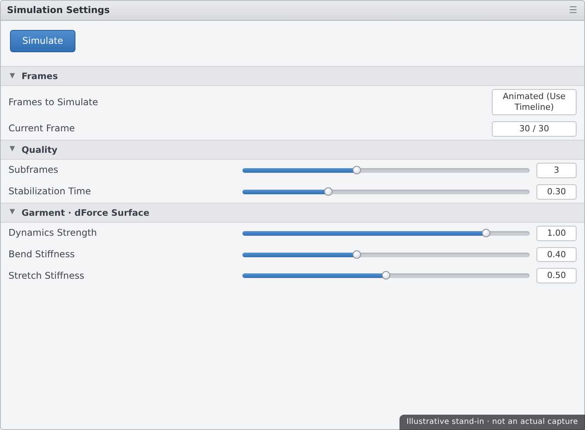
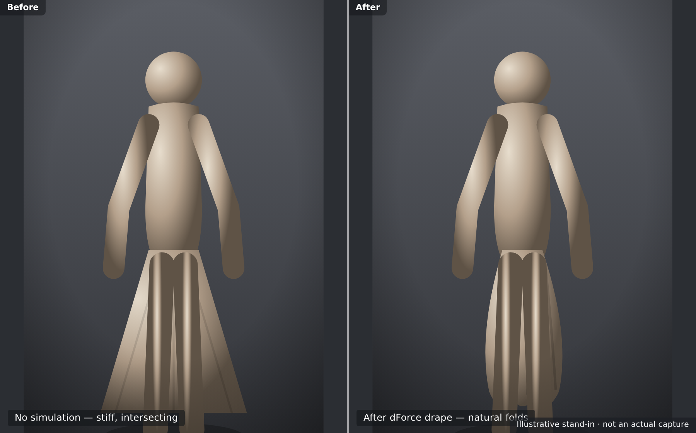

👗 Lesson 4.1: dForce Cloth & Hair Simulation
Posed figures look great until you notice the clothing — stiff, floating, unaffected by gravity or the pose beneath it. dForce fixes that. It's Daz Studio's built-in physics engine that drapes cloth and settles hair the way real fabric and strands actually hang, fold, and fall. In this lesson you'll learn the crucial difference between dynamic and conforming clothing, run your first drape simulation, tune the settings that actually matter, simulate dForce hair, and — most importantly — diagnose and fix the two failures every beginner hits: exploding cloth and pokethrough. Master this and your characters stop wearing costumes and start wearing clothes.
🎯 Learning Objectives
By the end of this lesson, you will be able to:
- Explain what dForce is and when to use it
- Tell dynamic clothing from conforming clothing
- Run a drape simulation on a dForce garment
- Adjust the key Simulation Settings for better results
- Simulate dForce hair so it settles naturally
- Diagnose and fix explosions and pokethrough
- Choose a reliable simulation workflow for any outfit
Estimated Time: 60 minutes
Project: Your posed, rendered character now wearing a dForce garment that's been draped to fall naturally over the pose — clean, collision-free, and ready to render or animate.
In This Lesson
What dForce Does
Pose a figure with default clothing and the cloth just follows the body rigidly — it doesn't sag between the knees when sitting, doesn't pool on the floor, doesn't wrinkle where an arm presses. dForce is the physics engine that adds that realism, simulating gravity and collision so fabric hangs and folds the way real cloth does.
💡 The one-sentence version: dForce is a cloth-and-hair physics simulator built into Daz — it drapes garments and settles hair under gravity and collision so they respond to the pose instead of ignoring it.
📖 Definition
dForce: Daz Studio's built-in physics simulation system for cloth and hair. It runs a simulation — computing how a garment's mesh moves under gravity while colliding with the figure — and leaves the cloth draped in a natural resting position over your pose.
dForce is a simulation, which means it calculates a result rather than letting you place every fold by hand. You set the stage — a pose, a garment, some settings — press Simulate, and physics does the draping. That's powerful and fast, but it also means understanding the setup is what separates a clean drape from an exploded mess.
💡 Simulation needs a moment of compute
Unlike posing, a dForce simulation takes a little time to solve — seconds to minutes depending on mesh density and settings. It also leans on your hardware. This is normal: you're running a real physics solve, not just moving a slider. Plan to simulate, review, adjust, and simulate again.
⚠️ Important Note: Not every garment supports dForce. A piece must be built as (or converted to) dynamic cloth for the simulation to affect it. Applying dForce to plain conforming clothing does nothing — which is exactly the distinction the next section clears up.
Dynamic vs Conforming
The first thing to know about any Daz garment is which kind it is, because it decides whether dForce can touch it. There are two families: conforming clothing and dynamic (dForce) clothing.
📖 Definition
Conforming clothing: a rigged garment that follows the figure's skeleton, bending with the body like a second skin. Dynamic (dForce) clothing: a garment with a dForce modifier that is simulated — it drapes freely under physics rather than rigidly tracking bones.
How they compare
| Aspect | Conforming | Dynamic (dForce) |
|---|---|---|
| How it fits | Follows the rig automatically | Drapes via a physics simulation |
| Realism | Good for tight fits; can look stiff | Natural sag, folds, and pooling |
| Speed | Instant — no simulation | Needs a simulation each pose |
| Best for | Fitted tops, tight jeans, armor | Dresses, robes, flowing skirts, capes |
💡 "dForce" in the product name is your clue
Daz labels simulation-ready garments with dForce in the product title, and they carry a dForce Modifier. If a garment isn't dForce, you can add a dynamic modifier to it (Edit → Object → Geometry → Add dForce Modifier), but purpose-built dForce garments are tuned to drape well and are the easy path.
⚠️ Important Note: You can mix both on one figure — a conforming top with a dynamic skirt, for instance. Just remember only the dynamic pieces respond to Simulate; the conforming pieces stay put. Knowing which is which prevents the common "why won't my shirt drape?" confusion.
Running a Simulation
With a dForce garment on your posed figure, running the drape is refreshingly simple. Open the Simulation Settings pane (Window → Panes → Simulation Settings) and click Simulate. The garment settles onto the body as physics runs.
📖 Definition
Drape: the result of a dForce simulation — the garment's mesh relaxed into its natural resting shape over the current pose, with gravity-driven folds and collision against the body. "Draping" a garment means running the simulation that produces that shape.
Daz can simulate two ways, and the choice matters:
| Mode | What happens | When to use it |
|---|---|---|
| Simulate from current frame | Drapes on the pose as it is now | Quick still-image drape on a set pose |
| Simulate over Timeline | Figure animates from a neutral start pose to the final pose, cloth following | Extreme poses, so cloth eases in without exploding |
✅ Pro Tip — start from a T-pose for hard poses
For dramatic poses (arms crossed, sitting, crouching), let the figure begin at a neutral A/T-pose on frame 0 and reach the final pose over the Timeline. Simulating this motion lets the cloth wrap gradually instead of being born already tangled in the body — the single best fix for explosions on tough poses.
⚠️ Important Note: Before simulating, make sure the garment actually fits at the start — if it's already deeply intersecting the body on frame 0, the solver begins in a broken state. A garment that starts clean drapes clean; one that starts buried tends to explode.
Simulation Settings
You can get far with defaults, but a few settings dramatically change your results. You'll find them in the Simulation Settings pane and, per-garment, on the Surfaces pane under the dForce properties.

Settings that move the needle
| Setting | What it controls | Reach for it when… |
|---|---|---|
| Frames to Simulate | Current frame vs animated Timeline range | Hard poses need the animated range |
| Subframes / Quality | Solver accuracy per step | Raise to reduce explosions and jitter |
| Stabilization Time | Lets cloth settle before the pose moves | Cloth needs to relax onto the body first |
| Dynamic Strength | How much the garment simulates vs holds shape | Lower to keep a stiffer, structured look |
| Stretch / Bend / Buckling Stiffness | Fabric character — silk vs denim | Tune per-surface for the right drape |
💡 Stiffness is what makes silk look like silk
The per-surface stiffness values are the difference between flowing silk and heavy denim. High bend stiffness resists folding (thick, structured fabric); low values flow and wrinkle easily (light, drapey fabric). If a drape looks wrong for the material, it's usually these dials, not the pose.
⚠️ Important Note: Cranking quality and subframes up makes simulations slower — sometimes a lot. Raise them only as needed to fix a specific problem, not as a default. Start with sensible values, and increase quality when you actually see jitter or instability, not preemptively.
dForce Hair
dForce doesn't only do cloth — it also simulates strand-based hair, letting long hairstyles fall, sway, and settle over shoulders instead of clipping through them in a fixed shape.
📖 Definition
Strand-based hair (SBH): hair made of actual simulated strands rather than fitted mesh caps. dForce can simulate these strands so the hairstyle responds to the head's pose and gravity — draping down the back, parting over a shoulder, moving with a tilt of the head.
The workflow mirrors cloth: fit the hair, pose the head, then simulate. Because hair strands are fine and numerous, hair sims are especially sensitive to quality settings and to starting from a clean position.
✅ Pro Tip — simulate hair after the body pose is final
Lock in your figure's pose before simulating hair. If you re-pose the head afterward, the simulated hair no longer matches and you'll have to re-run it. Pose first, then hair, then cloth (or hair last) — settle everything once the body is committed to avoid redoing sims.
⚠️ Important Note: Not all hair is dForce-ready. Many popular hairstyles are conforming mesh and won't simulate — they follow the head rig instead. Check the product page or the Parameters pane for dForce/strand-based support before expecting a hair sim to do anything.
Explosions & Pokethrough
Every dForce beginner meets the same two monsters: the garment that explodes into a chaotic tangle, and the body part that pookes through the cloth — pokethrough. Both are fixable once you know the causes.
⚠️ Explosion — cloth erupts into chaos
An explosion happens when the solver hits an impossible state — usually the garment starting deeply intersected with the body, an extreme pose reached too fast, or quality set too low. The cloth's mesh flies apart trying to resolve forces it can't.
- Simulate over the Timeline from a neutral pose so cloth eases into extreme poses.
- Fix start-frame intersections — make sure the garment fits before frame 0.
- Raise subframes/quality so the solver takes smaller, stabler steps.
- Check for trapped geometry — hands clenched into fabric, straps pinched under arms.
⚠️ Pokethrough — the body pierces the cloth
Pokethrough is when skin or an underlying garment shows through the outer cloth — a knee, elbow, or breast poking out. It comes from collision being too thin, layers too close together, or the cloth simply pulled tight over a sharp bend.
- Increase collision offset/thickness so the body pushes the cloth out a touch more.
- Smooth the garment with a Smoothing Modifier set to collide with the figure.
- Hide or shrink the underlying surface where it pokes, if it isn't seen.
- Add simulation frames so the cloth has time to fully settle outside the body.
⚠️ Important Note: When a sim goes bad, don't just re-press Simulate hoping for luck — clear the simulation (or reload the garment's fitted state) so you start clean, then change one thing and try again. Simulating on top of an already-broken drape usually makes it worse, not better.
A Reliable Workflow
Put the pieces together and dForce becomes dependable rather than fussy. Here's the order of operations that avoids most problems before they start.
| Step | Do this | Why |
|---|---|---|
| 1. Pose | Finalize the figure's pose first | Re-posing later means re-simulating |
| 2. Fit | Fit the dForce garment; fix start intersections | A clean start prevents explosions |
| 3. Simulate | Drape from current frame, or over Timeline for hard poses | Physics settles the cloth naturally |
| 4. Fix | Address any pokethrough or instability, re-sim | Small tweaks beat starting over |
| 5. Render | Render or move to animation | The drape is baked into the pose |
💡 Save before you simulate
Simulations can go sideways, and a good pre-sim save lets you roll back instantly instead of rebuilding. Save the scene once the pose and fit are clean, then experiment with simulation settings freely — you always have a known-good state to return to.

⚠️ Important Note: A drape is tied to a specific pose. If you animate or re-pose after simulating, the cloth won't follow on its own — you must simulate again for the new pose (or simulate across the whole animation). Treat the drape as belonging to the pose it was solved for.
Hands-on: Drape a Garment
Let's dress your character in a dForce garment and drape it cleanly — first a simple current-frame sim, then a Timeline sim for a harder pose, and finally fixing a pokethrough.
🏋️ Exercise 1: First Drape
Objective: Run a clean current-frame simulation.
Steps:
- Load a dForce garment onto your posed figure and confirm it fits without deep intersections.
- Open Simulation Settings and leave it on Simulate from current frame.
- Click Simulate and watch the cloth settle. Note the natural folds physics adds.
🏋️ Exercise 2: Timeline Sim for a Hard Pose
Objective: Drape onto an extreme pose without exploding.
Steps:
- Put the figure in a neutral A/T-pose on frame 0 and your dramatic pose on the last frame.
- Set Simulation Settings to simulate over the Timeline range and click Simulate.
- Watch the cloth wrap gradually as the figure moves into pose — no tangling.
💡 Hint — my cloth still explodes on the hard pose
Clear the simulation first so you start clean. Then check that frame 0 has no intersections, raise subframes/quality a step, and make sure the pose eases in over enough frames rather than snapping. Change one thing at a time and re-simulate — a chaotic explosion almost always traces back to a bad start or too-fast motion.
🏋️ Exercise 3: Fix a Pokethrough
Objective: Clean up the body piercing the cloth.
Steps:
- Find where skin pokes through — often a knee, elbow, or shoulder on a tight bend.
- Increase the garment's collision offset and/or add a Smoothing Modifier set to collide with the figure.
- Re-simulate and confirm the cloth now sits cleanly outside the body. Save the scene.
🎯 Quick Quiz
Question 1: What is the key difference between conforming and dynamic (dForce) clothing?
Question 2: A garment explodes into chaos on an extreme pose. What's the most reliable fix?
Question 3: After simulating a drape, you re-pose the figure into a new position. What happens to the cloth?
Best Practices
✅ Do's
- Finalize the pose first, then simulate — re-posing means re-simulating.
- Check the start fit for intersections before every simulation.
- Simulate over the Timeline for extreme poses to avoid explosions.
- Save before simulating so you can roll back to a clean state.
- Tune per-surface stiffness to match the fabric — silk vs denim.
- Clear a bad sim before trying again, changing one thing at a time.
❌ Don'ts
- Don't expect conforming garments to drape — only dForce/dynamic pieces simulate.
- Don't simulate from a deeply intersected start — that's the top cause of explosions.
- Don't crank quality preemptively — raise it only to fix a real problem.
- Don't re-pose the head after simulating hair — sim last, once the body is set.
- Don't re-press Simulate on a broken drape — clear it and start clean.
💡 Pro Tips
- Keep a neutral frame-0 pose handy as your standard explosion-proof start.
- Add a Smoothing Modifier (collide with figure) to banish stubborn pokethrough.
- Lower Dynamic Strength when you want a garment to hold a more structured shape.
- Raise Stabilization Time so cloth relaxes onto the body before the pose moves.
- Simulate hair after the body pose is locked to avoid redoing the sim.
Summary
🎉 Key Takeaways
- dForce is Daz's cloth-and-hair physics engine — it drapes garments and settles hair under gravity and collision.
- Conforming clothing follows the rig; only dynamic (dForce) garments respond to a simulation.
- Run a drape from the current frame, or over the Timeline from a neutral start for extreme poses.
- A few Simulation Settings — quality/subframes, stabilization, and per-surface stiffness — shape the result the most.
- Explosions come from bad starts and hard poses; pokethrough from thin collision — both are fixable, and a drape belongs to the pose it was solved for.
📚 Additional Resources
- Simulation Settings — official Daz user guide
- dForce overview — Daz documentation
- About dForce in Daz Studio
🚀 What's Next?
Your character now wears clothes that actually behave like cloth. Next we add motion. In Lesson 4.2 — Animation Basics with the Timeline, you'll set keyframes, learn the Timeline alongside aniMate2 and aniBlocks, build a simple turntable, and render an image sequence out to video — bringing your posed, dressed figure to life.
💡 Your cloth behaves now!
Dynamic vs conforming, draping, settings, hair, and the two big failure modes — you can now dress a figure and make the fabric fall like real cloth. dForce is where renders leap from "posed doll" to "believable person," and you've got it handled. Time to make things move.